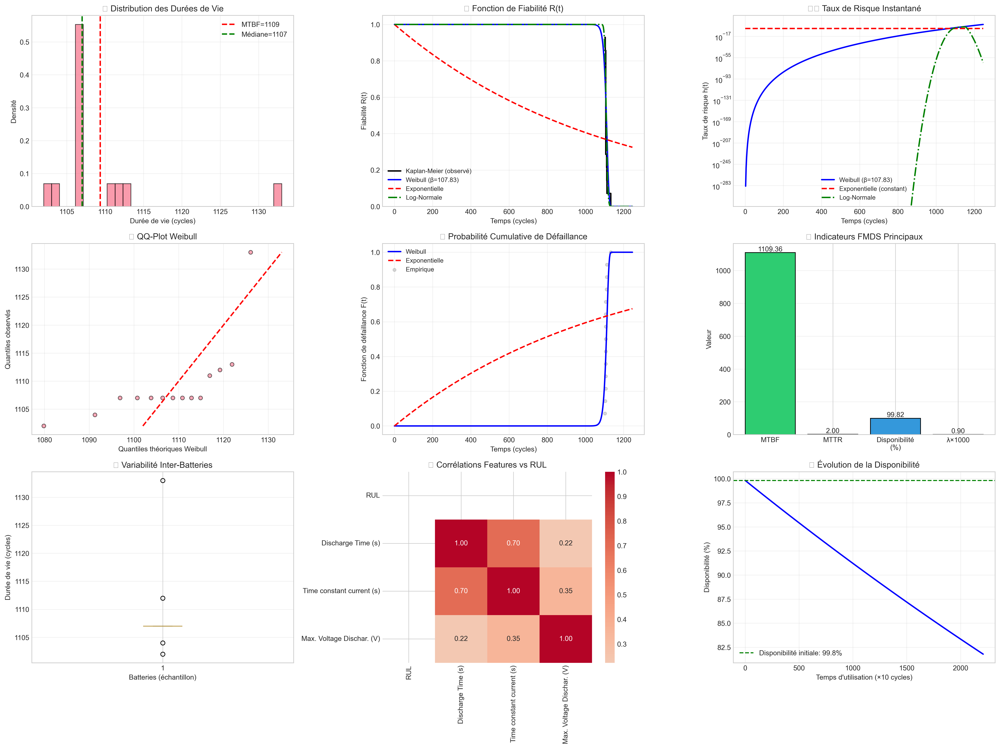
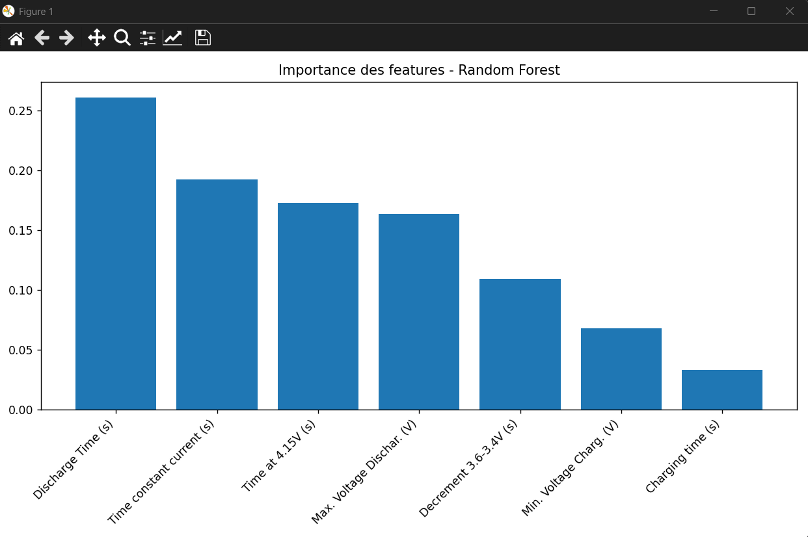
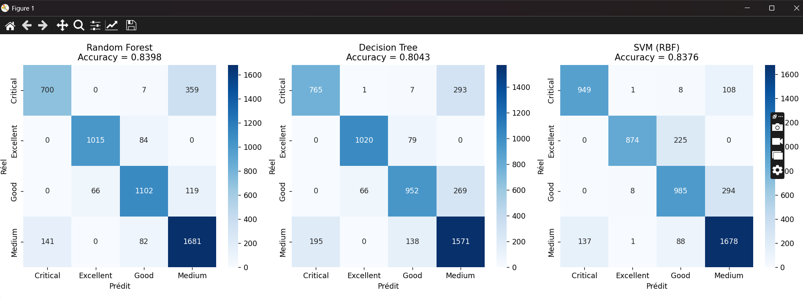
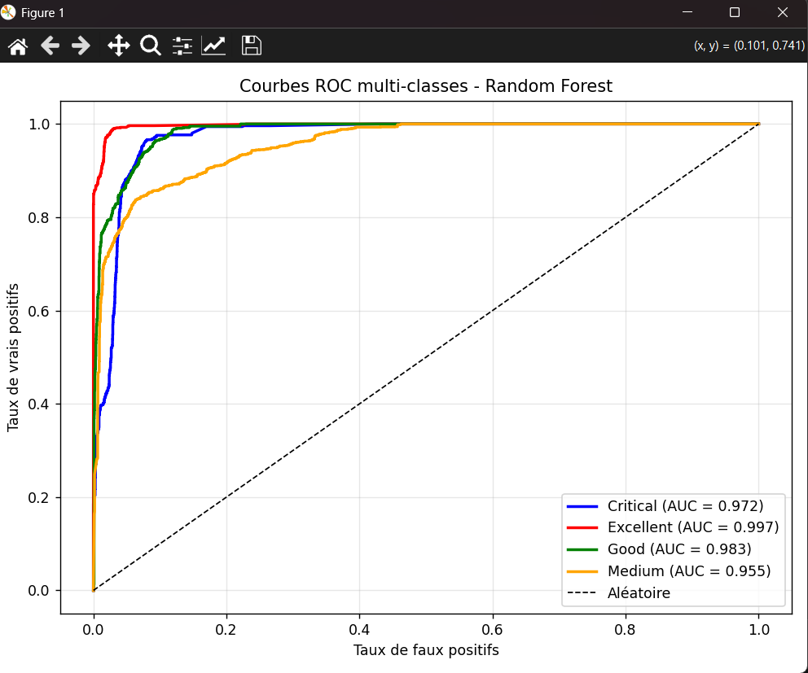
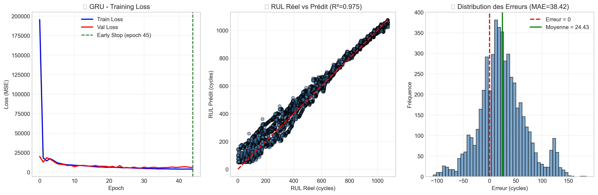
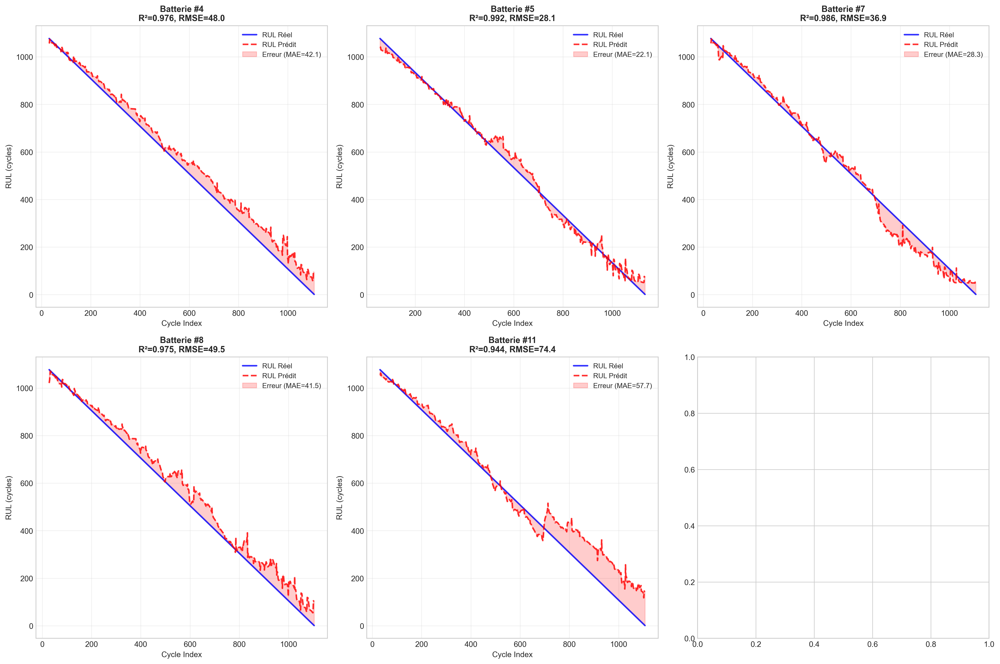

Batteries Lithium-ion 18650 | Mini-projet Maintenance Intelligente
Les batteries lithium-ion (NMC-LCO 18650 – 2.8 Ah) sont essentielles dans les véhicules électriques, le stockage d'énergie renouvelable et les systèmes critiques. Prédire leur durée de vie restante (RUL) permet d'anticiper les pannes, d'optimiser la maintenance prédictive et de prolonger leur usage en seconde vie.
📂 Dataset : Hawaii Natural Energy Institute – 14 cellules – plus de 1000 cycles à 25°C – Charge C/2 – Décharge 1.5C.
📥 Télécharger le DatasetL'analyse FMDS permet d'évaluer quantitativement la performance des batteries lithium-ion à travers quatre dimensions interdépendantes : Fiabilité, Maintenabilité, Disponibilité et Sécurité.
1109.36
cycles (≈ 163 jours)
2.00
cycles (hypothèse)
99.82%
Excellente
0.0009
par cycle
| 📊 Indicateur | 📈 Valeur | 💡 Interprétation | 📊 Performance |
|---|---|---|---|
| MTBF (Mean Time Between Failures) | 1109.36 cycles | Durée de vie moyenne entre pannes | Excellent |
| MTTR (Mean Time To Repair) | 2.00 cycles | Temps moyen de remplacement (hypothèse) | Rapide |
| Taux de défaillance (λ) | 0.000901/cycle | Risque de panne par cycle | Très faible |
| Taux de réparation (μ) | 0.500/cycle | Capacité de réparation | Élevé |
| Disponibilité | 99.82% | Système très disponible | Exceptionnel |
| Modèle de défaillance | Log-Normale | Dégradation progressive confirmée | Validé |
| 🏆 Modèle | 📊 Paramètres | 📉 AIC | 📈 BIC | 🎯 Log-Likelihood | 🏅 Rang |
|---|---|---|---|---|---|
| 🥇Log-Normale | σ=0.006, scale=1109.33 | 98.46 | 99.74 | -47.23 | 1er |
| 🥈Gamma | α=24552.23, scale=0.05 | 98.53 | 99.81 | -47.27 | 2ème |
| 🥉Weibull | β=107.83, η=1113.56 | 108.75 | 110.02 | -52.37 | 3ème |

Figure 1: Analyse FMDS complète - Distribution des temps de vie, fonctions de fiabilité R(t), taux de risque h(t), Kaplan-Meier, QQ-Plot Weibull, indicateurs FMDS, variabilité inter-batteries, corrélations features vs RUL, et évolution de la disponibilité.
β > 1 → Taux de défaillance croissant ✓
Confirme un comportement d'usure progressive typique des batteries Li-ion
Cycle caractéristique où 63.2% des batteries sont défaillantes
Correspond à la durée de vie caractéristique du système
| ⏱️ Horizon Temporel | 📊 Fiabilité R(t) | ⚠️ Probabilité de Défaillance F(t) | 💡 Recommandation |
|---|---|---|---|
| 100 cycles | 91.4% | 8.6% | Surveillance normale |
| 200 cycles | 83.5% | 16.5% | Surveillance renforcée |
| 300 cycles | 76.3% | 23.7% | Planifier maintenance |
| 666 cycles (60% MTBF) | ~55% | ~45% | ⚠️ Surveillance critique |
| 887 cycles (80% MTBF) | ~35% | ~65% | 🔧 Maintenance préventive |
L'analyse FMDS révèle une excellente disponibilité (99.82%) et un MTBF de 1109 cycles pour les batteries étudiées. Le modèle Log-Normale (meilleur AIC = 98.46) confirme un comportement de dégradation progressive typique des batteries Li-ion.
Le paramètre de forme Weibull β = 107.83 (> 1) valide le mode de défaillance par usure progressive, justifiant une stratégie de maintenance préventive optimisée à ~887 cycles pour minimiser les coûts tout en garantissant la sécurité.
Détecter en temps réel l'état de santé des batteries pour anticiper les défaillances et planifier la maintenance.
📊 Split rigoureux : 9 batteries pour l’entraînement, 5 batteries totalement nouvelles pour le test (aucune fuite de données).
| 🏷️ Classe | 📈 Critère (RUL restant) | 💡 Signification | ⚡ Action |
|---|---|---|---|
| ✅Excellent | > 80% du RUL max | Batterie neuve/peu utilisée | Utilisation normale |
| 👍Bon | 55-80% du RUL max | Bon état général | Surveillance standard |
| ⚠️Moyen | 20-55% du RUL max | Dégradation visible | Surveillance renforcée |
| 🚨Critique | ≤ 20% du RUL max | Risque de panne élevé | Remplacement imminent |
| 🧠 Modèle | 📊 Accuracy | 🎯 AUC macro | 🏆 Rang |
|---|---|---|---|
| 🌲Random Forest | 83.98% | 0.977 | 1er |
| ⚡SVM (RBF) | 83.76% | 0.979 | 2ème |
| 🌳Decision Tree | 80.43% | 0.947 | 3ème |
Les principales confusions concernent les classes adjacentes ou extrêmes (Critique/Moyen), ce qui est cohérent avec une dégradation progressive de l’état. La forte confusion Critique↔Moyen suggère un besoin d’amélioration pour distinguer ces deux états opposés.

Figure 2: Importance des features – Discharge Time (~26%) domine, suivi de Time constant current (~19%) et Time at 4.15V (~17%).
| 📊 Feature | 📈 Importance | 💡 Pourquoi Important? |
|---|---|---|
| Discharge Time (s) | ~26% | Directement lié à la capacité restante de la batterie |
| Time constant current (s) | ~19% | Phase CC – diminue avec le vieillissement |
| Time at 4.15V (s) | ~17% | Indicateur de dégradation du voltage max en charge |
| Max. Voltage Dischar. (V) | ~16% | Tension maximale atteinte pendant la décharge – indicateur de santé interne |
| Decrement 3.6-3.4V (s) | ~11% | Vitesse de décharge en fin de cycle – reflète la résistance interne |
| Min. Voltage Charg. (V) | ~7% | Tension minimale pendant la charge – sensible aux défauts de cellule |
| Charging time (s) | ~3% | Durée totale de charge – peu discriminant ici |

Figure 3: Matrices de confusion comparées – Random Forest montre la meilleure diagonalité (moins d’erreurs hors diagonale).

Figure 4: Courbes ROC multi-classes – Random Forest (AUC macro = 0.977) > SVM (0.979) > Decision Tree (0.947). Détail par classe : Critical 0.972, Excellent 0.997, Good 0.983, Medium 0.955.
Le modèle Random Forest est retenu avec 83.98% d'accuracy sur 5 batteries inconnues et un AUC macro de 0.977. Ses avantages :
🎯 Ce modèle permet une surveillance fiable avec moins de 16% d’erreurs de classification sur des batteries jamais vues.
🛠️ Implémentation : scikit-learn (Random Forest, SVM, Decision Tree), standardisation des features, validation croisée GroupKFold pour respecter l’intégrité des batteries.
Cinq architectures de deep learning ont été évaluées pour la prédiction du RUL des batteries lithium-ion. Le modèle GRU (Gated Recurrent Unit) se distingue par son excellent équilibre entre précision et complexité.
| Modèle | R² Global | RMSE (cycles) ↓ | MAE (cycles) ↓ | Commentaire |
|---|---|---|---|---|
| 🏆 GRU (notre modèle) | 0.9745 | 49.95 | 38.42 | Meilleur équilibre global |
| BiLSTM | 0.9744 | 50.09 | 39.51 | Très proche du GRU |
| CNN + GRU | 0.9713 | 53.01 | 37.05 | Meilleur MAE, mais MAPE élevé |
| CNN + LSTM | 0.9677 | 56.29 | 42.15 | Meilleur MAPE |
Le modèle GRU (Gated Recurrent Unit) offre un compromis optimal entre performance et complexité pour la prédiction du RUL des batteries. Contrairement au LSTM, le GRU utilise seulement 2 portes (reset et update) au lieu de 3, réduisant ainsi le nombre de paramètres tout en maintenant d'excellentes performances.
| 📊 Couche | 🔧 Configuration | 📈 Paramètres | 💡 Objectif |
|---|---|---|---|
| Input | Séquences temporelles | (20 cycles, 7 features) | Fenêtre glissante de 20 cycles |
| GRU (1) | 64 unités, return_sequences=True | ~13,824 paramètres | Extraction features temporelles |
| Dropout (1) | rate=0.3 | 0 paramètres | Régularisation |
| GRU (2) | 32 unités, return_sequences=False | ~12,416 paramètres | Compression temporelle |
| Dropout (2) | rate=0.3 | 0 paramètres | Régularisation |
| Dense (1) | 64 neurones, ReLU | ~2,112 paramètres | Apprentissage non-linéaire |
| Dropout (3) | rate=0.2 | 0 paramètres | Régularisation |
| Dense (2) | 32 neurones, ReLU | ~2,080 paramètres | Réduction dimension |
| Dense (Output) | 1 neurone (linéaire) | ~33 paramètres | Prédiction RUL (cycles) |
Le GRU atteint un R² de 0.9745 (97.45% de variance expliquée) avec seulement ~30k paramètres, offrant le meilleur compromis performance/complexité.
R² moyen par batterie : 0.9746 ± 0.0187 → Très faible variance, confirmant la robustesse du modèle sur différentes batteries.
Architecture plus légère que BiLSTM (~25% de paramètres en moins) avec des performances quasi-identiques, permettant un déploiement plus facile en temps réel.
MAE = 38.42 cycles → Erreur moyenne de ~38 cycles, suffisante pour planifier la maintenance 2-3 semaines à l'avance.
Le GRU surpasse légèrement le BiLSTM car :

Figure 5: Visualisations globales - Training Loss, RUL Réel vs Prédit (R²=0.9745), Distribution des Erreurs (MAE=38.42 cycles)

Figure 6: Courbes RUL Réel vs Prédit pour les 6 premières batteries - Le modèle GRU capture fidèlement la dynamique de dégradation
Fichier contenant les métriques de performance du modèle GRU (R², RMSE, MAE, MAPE).
📄 Télécharger Metrics (CSV)Prédictions RUL vs Réel pour chaque batterie avec erreurs absolues et relatives.
📄 Télécharger Prédictions (CSV)Statistiques individuelles (R², MAE, RMSE) pour chacune des 5 batteries testées.
📄 Télécharger Stats Batteries (CSV)Ce projet de maintenance intelligente démontre l’efficacité d’une approche hybride combinant FMDS, diagnostic (machine learning) et pronostic (GRU) pour estimer le RUL des batteries lithium-ion.
| Horizon | Amélioration | Impact | Priorité |
|---|---|---|---|
| Court terme 1–3 mois |
|
+2 à 3% R² | 🔥 Haute |
| Moyen terme 3–6 mois |
|
+5% précision | 📈 Moyenne |
| Long terme 6–12 mois |
|
Solution industrielle | 🔮 Future |
➡️ Ce projet valide l’approche Maintenance 4.0 : combinaison FMDS, ML et deep learning.
Diagnostic : ~84% accuracy (batteries inconnues).
Pronostic : R² = 97.45%.
Approche fiable, généralisable avec fort potentiel industriel.
{kind=link}